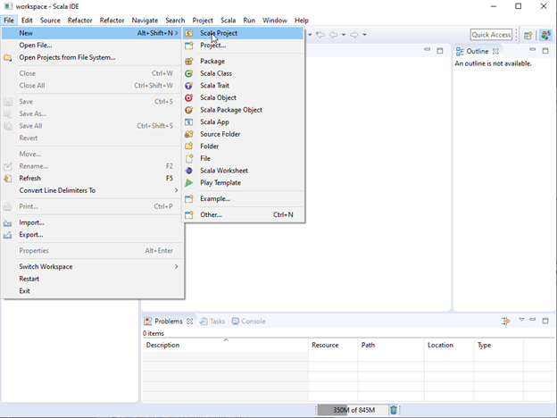
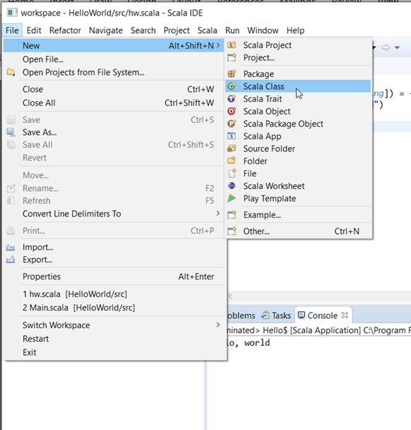
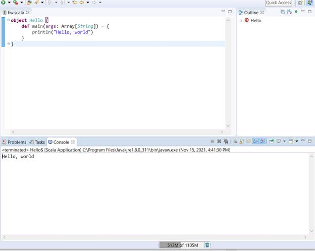

Installation:
·
Download the Scala source code, from Scala's website
·
Get the Eclipse Scala IDE here
·
Check out the API here
Linux
·
Download the Scala
source code, from Scala's website
·
Unpack the tgz file using $ tar -zxvf
scalaDistro
·
Add an environment
variable with the Scala path directory $ export SCALA_HOME=/path/to/scala/distro
·
Add the Scala bin
directory to your path with $ PATH=$PATH:$SCALA_HOME
·
Ensure that everything
works by using $ scala -version
·
Get the Eclipse Scala
IDE here
·
Check out the
API here
·
Download the Scala source code, from Scala's website
·
Unpack the tgz file using $
tar -zxvf scalaDistro
·
Add an environment variable with the Scala path directory $
export SCALA_HOME=/path/to/scala/distro
·
Add the Scala bin directory to your path with $
PATH=$PATH:$SCALA_HOME
·
Ensure that everything works by using $
scala -version
·
Get the Eclipse Scala IDE here
·
Check out the API here


